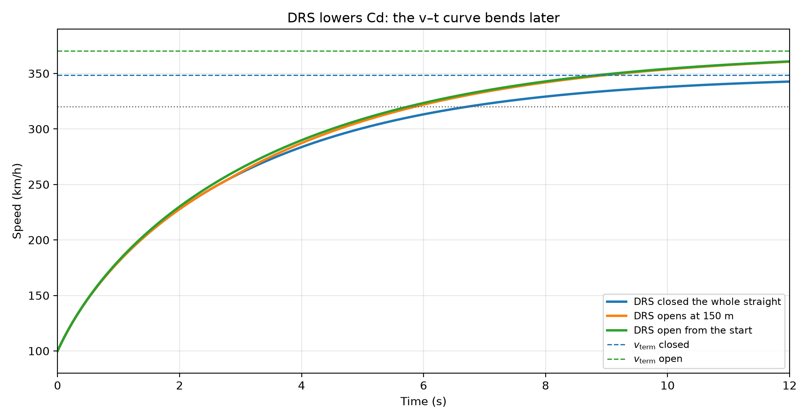
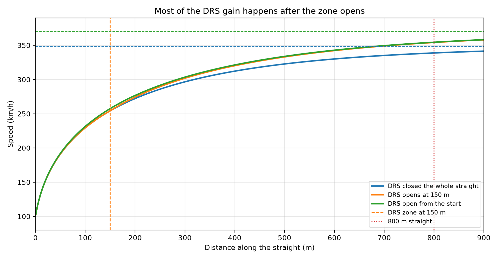
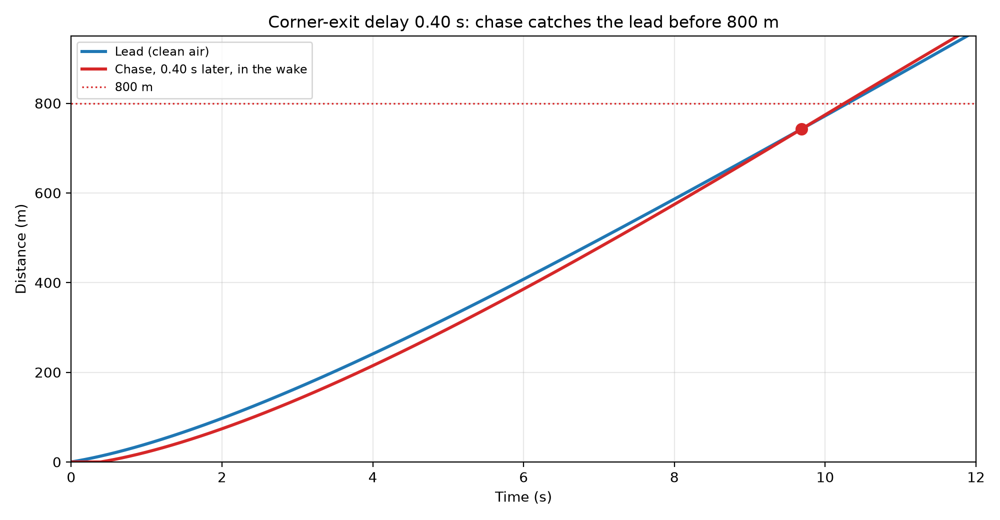
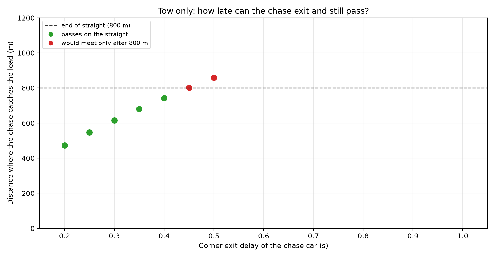

Your Name
I am in my last year of high school. Physics is the subject I care about most, and Formula 1 is the racing I follow. I like both for the same reason: something happens, and I can calculate it. I want to study physics or mechanical engineering.
01 — KinematicsTelemetry, braking, and energy
I compared Max Verstappen and Charles Leclerc going into Turn 1 at the 2023 Monaco Grand Prix. The data are qualifying telemetry from FastF1, recorded 10 times a second.
I used the speed trace to estimate how hard each car slowed down and how hard it turned. Slowing down is the change in speed divided by the change in time. Turning is an = v² / r. The power at one moment is P = m a v. The mass is 798 kg, the FIA minimum, not a weigh-in of these two cars.
What I found
Power depends on speed.
The cars arrive at about 290 km/h. In the first ~0.3 s of braking, the deceleration reaches about −3.5 g. With m = 798 kg, P = m a v gives a peak near 2.2 MW. The same deceleration takes energy away faster when the car is going faster.
“Who brakes later” depends on the cutoff.
If braking starts at −1.5 g or below, the two cars differ by only about 0.2–0.5 m. If heavy braking means −2.5 g or below, Leclerc is about 5–8 m later. Verstappen slows down more gradually, and he gets back on the throttle sooner. I compared the whole trace, not who touches the pedal first.
02 — AerodynamicsDrag, DRS, and the wake
I asked what one change does on an 800 m straight. Opening DRS lowers the drag coefficient after 150 m. The wake is a different change: it lowers the air density felt by the car behind, and only while the gap is under 35 m. I integrated Newton’s second law once, with Euler’s method and a time step of 0.01 s. The buttons show those finished results.
These are assumptions, not numbers published by a team. The air density is 1.225 kg/m³. The drag coefficient is 0.90 until 150 m, then 0.75. The frontal area is 1.50 m², the power is 750 kW, the mass is 798 kg, and the car leaves the corner at 100 km/h. The time step is 0.01 s. In the equation, P/v is the forward force from that power, and the other term is air resistance, which grows with speed squared. On an 800 m straight the car does not reach either terminal speed.
a = (1/m) ( P/v − ½ ρ Cd A v² )
DRS changes Cd in the equation. The wake changes the chase car’s ρ, and only while the cars are close. The button below changes Cd only.
Each dot marks where the speed reaches 320 km/h. It is not a car driving along the straight. The dot moves to that distance and stops.
- Open after 150 m: 320 km/h at 399.1 m
- Closed: 320 km/h at 470.9 m
- Cd drops only after 150 m
After 150 m, Cd drops to 0.75. The car finishes the straight at 354.2 km/h and reaches 320 km/h at 399.1 m. The terminal speed, 370.3 km/h, is not reached on this straight.
Closed: 338.8 km/h at 800 m, 320 km/h at 470.9 m, terminal speed 348.5 km/h, also not reached.
The wake is a separate question. In these two figures, DRS is closed on both cars.
The car behind leaves the corner 0.40 s later. The gap starts near 13 m, still inside the wake, and the cars draw level at about 743 m.
The car behind starts in the wake. The gap then grows past 35 m, the help disappears, and the cars never meet.
Inside 35 m, the car behind feels 70% of the usual air density, 1.225 kg/m³. The 0.40 s is a head start I chose for this model. It is not the one-second rule in Formula 1. The lead car stays at the full density.




What I found
DRS lowers the drag coefficient, and only after 150 m.
Cd goes from 0.90 to 0.75. The speed at 800 m goes from 338.8 km/h to 354.2 km/h, which is 15.4 km/h faster. The car reaches 320 km/h at 399.1 m instead of 470.9 m. The terminal speeds, 348.5 km/h and 370.3 km/h, are still ahead of both curves. Getting to 320 km/h takes 0.86 s less. Finishing the 800 m takes only 0.20 s less.
The wake changes the air around the car behind, and only up close.
This is not Formula 1’s one-second rule. A 0.40 s delay still catches up at about 743 m. A 0.55 s delay loses the wake once the gap is past 35 m, and the cars never meet.
03Honors
Sample entry. Replace it with your own record, or delete the card. Do not publish an award you did not receive.
Our team simulated a double pendulum in Python. I looked at how a very small change in the starting position pulls the two paths apart.
I estimated how long a water droplet takes to bounce, then checked that time against a slow-motion video.
04Activities
Sample entry. Write a role you actually held. Replace the photographs, or delete the whole photo grid if you have none.
I led a weekly club where we measured things and plotted them in Python. For two longer projects, a water rocket and a small wind tunnel, we watched the drag before we wrote the formula.


05Service
Sample entry. If you have no service record, delete this whole section. Do not leave an empty hour count.
I ran short experiments for younger students, with light and magnets, so they saw what happened before I told them the name of the law.